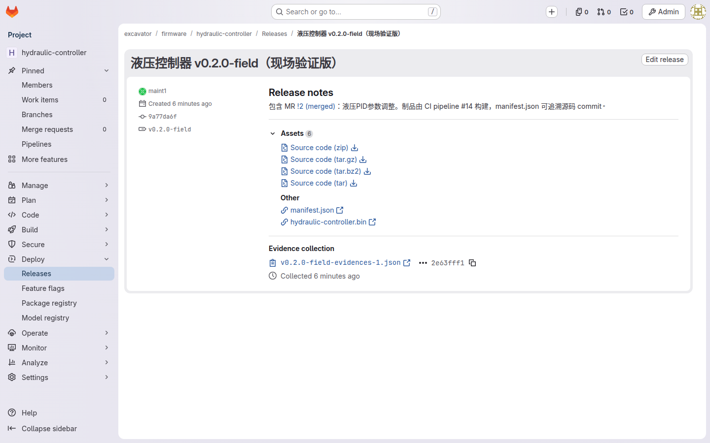
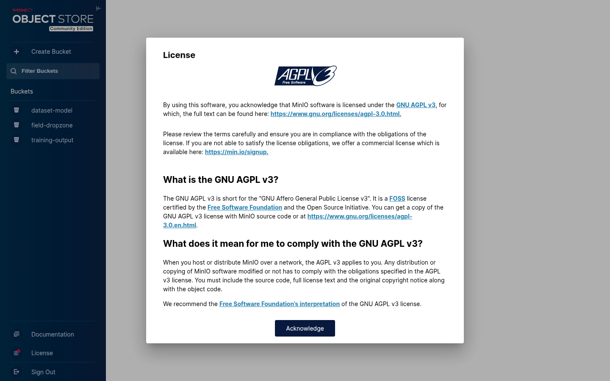
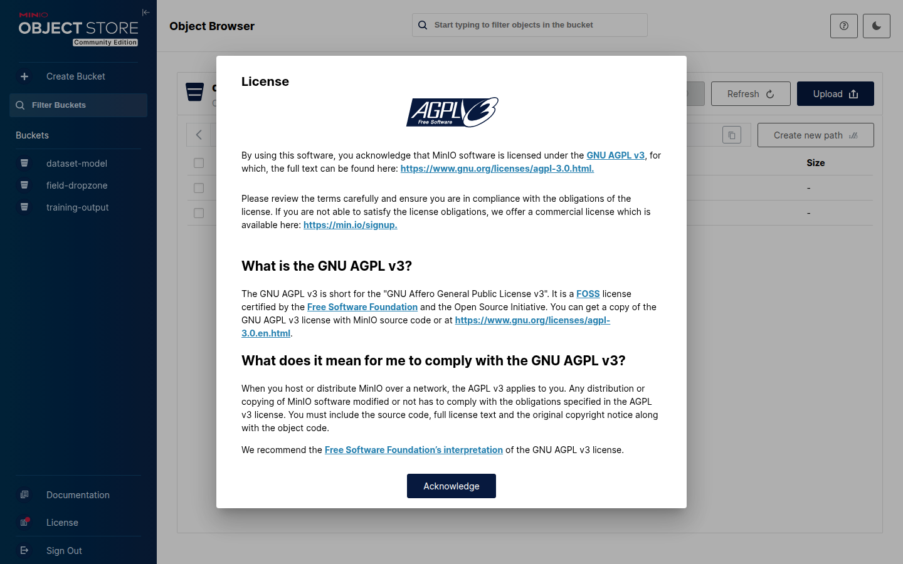
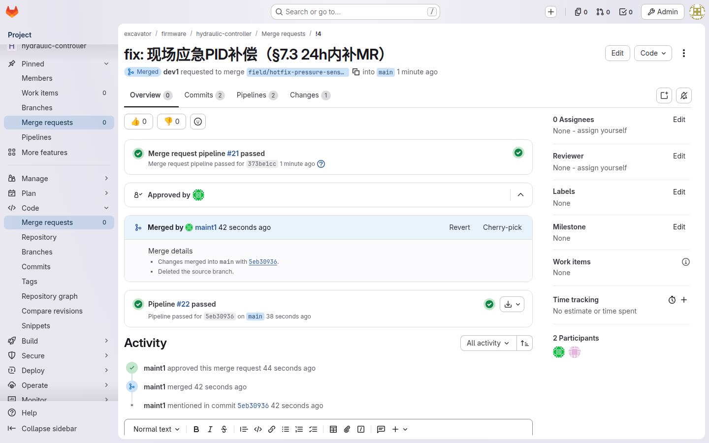

你是这个项目的驻场工程师：在公司里是 Developer，到了现场账号降为 Guest——能下载制品、提问题，但不能改中心仓（§7 开篇）。你的一切工作围绕一条设计原则展开：离线为基线、有网为加速——流程不赌现场有网。出场前把该拿的都拿全，现场三类工作各走各的通道，极端情况有应急兜底、但兜底也有账可查。
| 能 ✅ | 不能 ❌ |
|---|---|
| 出场前 clone 代码、下载已签名制品 | 现场编译正式版本 |
| 现场本地 commit 改码验证 | 改动不留 commit（=违规） |
| 应急刷本地临时包（须 24h 内补 MR） | 把临时包当工作方式 |
在公司把"弹药"备齐：git pull 同步代码，再从 Release 下载本次任务相关的已签名制品，按目标机器版本打包。
$ git pull
$ # 从 GitLab Release 页下载 .bin 与 manifest.json
按 platform/ 仓库里的出场 checklist 核对：代码、制品、工具链版本、联系人——四样缺一，现场就可能卡死（§7.1）。

只刷预构建制品，刷之前核对 manifest 四字段：name / commit / build_time / runner——确认手上这个包是哪个版本、什么时候、在哪个 runner 构建的（§6.3）。
bug 修复、参数调整都在 DLP 笔记本上本地 git commit（哪怕没网）→ 有网即 push → MR → CI 出包 → 下载刷入（§7.2）。
DLP 笔记本（装了集团透明加解密软件的电脑，硬盘上的代码自动加密）——代码拷出去打不开，所以改动回中心仓既是制度要求，也是你唯一安全的备份方式。
改动必须以 commit 回中心仓——这是防止代码重新散落回个人电脑的硬规则：体系好不容易把代码收进 GitLab，一次"改完不交"就又退回 U 盘时代。
日志、传感器数据进 MinIO 投放区（field-dropzone 桶）——现场能连则直传，否则回公司上传（§7.2）。

field-archive/ 目录留档。

方向单一：数据向内流、代码向外只走 git——两条单向道，审计才简单。
断网 + 机器急等，等不了回公司出包？允许本地临时包先刷，但回公司 24 小时内补齐 MR 和正式构建（§7.3）。

git push -u origin <分支>，再建 MR，改动就能回中心仓。
manifest.json，看 name / commit / build_time / runner 四字段——直接对出这是哪个 commit、何时构建的哪个版本，再决定往上刷哪一版。
设计文档（docs/superpowers/specs/2026-08-31-excavator-code-management-design.md）：
原型验收（docs/superpowers/specs/2026-08-31-excavator-prototype-test-plan.md）：